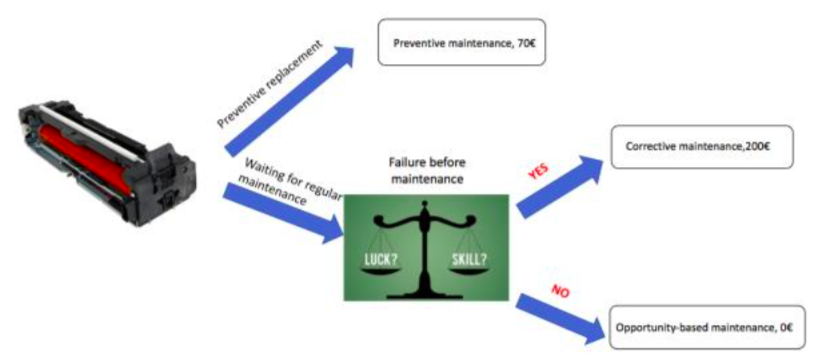

Finding the optimal replacement strategy for Ricoh's printers' fuser units
Oct 2017 ~ BSc Course "Introduction to Business Analytics"
Length: 2mo (at 0.25 FTE)
Software: Microsoft Excel
Data: History of past failures of the fuser unit and days since the installation of
the new piece per printer, plus the number of copies done by each printer
Problem description:
There are three available replacement options, namely Preventive (€70), Corrective (200€), and
Opportunity-based (€0), and the goal is to find the most suitable strategy for each printer
such that the logistics costs are minimized

Approach & Results:
Computed the probability of failure before the next maintenance for each machine based on
the number of copies printed using simple Excel formulas (e.g. average, sum) after discovering
that this variable has more predictive power than the number of days since replacement.
Based on this probability, the minimal expected cost was derived, which indicated the
replacement strategy per printer. Consequently, the logistics costs associated with following
an individual replacement policy for each machine suggested an improvement of 13% over pursuing
the Preventive strategy for all the printers.